fudge.gnd.covariances package¶
Submodules¶
fudge.gnd.covariances.base module¶
Base classes for covariances: matrix, axes.
-
class
fudge.gnd.covariances.base.covarianceMatrix(label, type='absolute', matrix=None, energyBounds=None, ENDFconversionFlag=None)[source]¶ Bases:
xData.ancestry.ancestryBase class for all covariances. covarianceMatrix contains a label, a ‘gridded2d’ container with the matrix data + axes and a list of energy boundaries, and a covariance ‘type’ which might be ‘absolute’, ‘relative’ or ‘correlation’. Some details :
- Matrix data is stored in an
xData.gridded.gridded2dclass. May be diagonal, symmetric, sparse, etc - Symmetric matrices only require one set of energy bounds, but asymmetric matrices require bounds for both axes.
-
ENDFconversionFlag= None¶ yes, this is a crutch to help when converting back to ENDF
-
check(info)[source]¶ Check if uncertainty in the bounds passed into the checker. Requires specification of the data (“theData”) if the covariance is not relative. I was not creative when I coded this, so it will fail when theData.getValue( x ) doesn’t exist or is a function of more than one value.
-
convertAxesToUnits(units)[source]¶ Converts all the axes’ units. The parameter
unitsshould be a list of units with the same length as self.axes
-
fix(**kw)[source]¶ Fix uncertainty using the bounds passed into the fixer. Requires specification of the data (“theData”) if the covariance is not relative. I was not creative when I coded this, so it will fail when theData.getValue( x ) doesn’t exist or is a function of more than one value.
-
getColumnBounds(unit=None)[source]¶ Get the bounds of the column. If unit is specified, return the bounds in that unit.
-
getCorrelationMatrix()[source]¶ Returns the correlation matrix generated from self’s covariance matrix. This is essentially a copy of self, but renormalized by the uncertainty:
correlation[i,j] = covariance[i,j]/sqrt(covariance[i,i])/sqrt(covariance[j,j])We reuse the covariance matrix class so that we can do plotting, etc. If you have a correlation matrix, you can safely recover it provided you have the uncertainty vector.
Currently only works for a square covariance matrix and not a off-diagonal part of another covariance.
-
getRowBounds(unit=None)[source]¶ Get the bounds of the row. If unit is specified, return the bounds in that unit.
-
getUncertaintyVector(theData=None, relative=True)[source]¶ Get an XYs1d object containing uncertainty for this matrix. Convert relative/absolute if requested (if so, must also pass central values as theData)
Examples:
if the covariance matrix is relative and we want relative uncertainty vector, just do:
> matrix.getUncertaintyVector()
if we want the absolute matrix instead:
> matrix.getUncertaintyVector( theData=<XYs1d instance>, relative=False )
-
group(groupBoundaries=(None, None), groupUnit=(None, None))[source]¶ Group the matrix in self
Parameters: - groupBoundaries – a 2 element list containing the group boundaries for the rows and columns (respectively) of the covariance to be regrouped rows go in the first element, columns in the second
- groupUnit – a 2 element list containing the units in which group boundaries are specified for the rows and columns (respectively) of the covariance to be regrouped
Returns: the regrouped matrix (an xData.array.full as the array in a gridded2d.matrix)
Note
We still need to do flux weighting
Regrouping Theory
Given a function 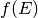, we write the grouped data using fudge’s
flatinterpolation scheme. We note that we could write this scheme as an expansion over basis functions: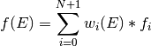
where the weight functions 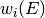 are
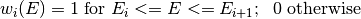
These weights are an orthogonal (bot not orthonormal) basis, with
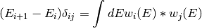
So, to transform from basis to 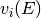 (which has group boundaries 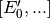), do:
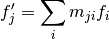
where 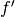 is the regrouped function coefficients and 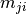 is the matrix

Applying regrouping theory to covariance matrices
When we are given a covariance matrix
 in ENDF, it is meant to be interpreted
as a grouped covariance in both the direction of the matrix rows and the matrix
columns. Therefore, we must regroup in both the row direction and the column
direction. The ENDF format gives both the group boundaries for the rows and columns.
In other words, ENDF gives us the following rule for evaluating the continuous row-
column covariance:
in ENDF, it is meant to be interpreted
as a grouped covariance in both the direction of the matrix rows and the matrix
columns. Therefore, we must regroup in both the row direction and the column
direction. The ENDF format gives both the group boundaries for the rows and columns.
In other words, ENDF gives us the following rule for evaluating the continuous row-
column covariance: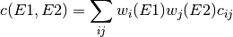
Computing 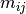 as before,
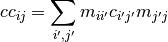
It is straightforward to generalize to the case where the row and column bases are different.
In the routine below, we abuse
xData.XYs1dto specify the functions and use theXYs1d.groupOneFunction()method to perform the integrals to get the regrouping matrix. We do this separately for the rows and the columns. The matrix multiplication that converts a covariance from one pair of bases (group structures) to another is accomplished using numpy.An explanation of fudge’s ‘flat’ interpolation
Suppose we have a function specified using fudge’s ‘flat’ interpolation. Then we have
 entries 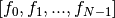 and a set of group
boundaries 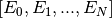 and the following rule for interpolation:
entries 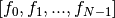 and a set of group
boundaries 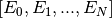 and the following rule for interpolation:- Below 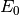, evaluates to 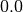
- From 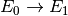, evaluates to 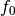
- From 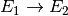, evaluates to

- ...
- From 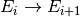, evaluates to

- ...
- From 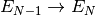, evaluates to 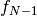
- Above 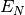, evaluates to
-
label¶
-
matrix= None¶ a
xData.gridded.gridded2dinstance containing the matrix
-
moniker= 'covarianceMatrix'¶
-
static
parseXMLNode(element, xPath, linkData)[source]¶ Translate <covarianceMatrix> element from xml into python class.
-
plot(title=None, scalelabel=None, xlim=None, ylim=None, xlog=False, ylog=False)[source]¶ Parameters: - title –
- scalelabel –
- xlim –
- ylim –
- xlog –
- ylog –
Returns:
-
toAbsolute(rowData=None, colData=None)[source]¶ Rescales self (if it is a relative covariance) using XYs1d rowData and colData to convert self into an absolute covariance matrix.
Parameters: - rowData (XYs1d) – an XYs1d instance containing data to rescale covariance in the “row direction” if it isn’t given, we’ll compute it from the corresponding data in the reactionSuite
- colData (XYs1d) – an XYs1d instance containing data to rescale covariance in the “col direction” if it isn’t given, we’ll compute it from the corresponding data in the reactionSuite
Returns: a copy of self, but rescaled and with the type set to absoluteToken
-
toCovarianceMatrix()[source]¶ Return self, converted to a base instance. Since it already is one, we just return a copy. :return:
-
toRelative(rowData=None, colData=None)[source]¶ Rescales self (if it is a absolute covariance) using XYs1d rowData and colData to convert self into a relative covariance matrix.
Parameters: - rowData (XYs1d) – an XYs1d instance containing data to rescale covariance in the “row direction” if it isn’t given, we’ll compute it from the corresponding data in the reactionSuite
- colData (XYs1d) – an XYs1d instance containing data to rescale covariance in the “col direction” if it isn’t given, we’ll compute it from the corresponding data in the reactionSuite
Note
If the column axis is a link, only rowData is needed. If neither rowData nor colData are specified, you’d better hope that the covariance is already relative because this will throw an error.
Returns: a copy of self, but rescaled and with the type set to relativeToken
-
type= None¶ ‘relative’ or ‘absolute’
- Matrix data is stored in an
fudge.gnd.covariances.covarianceSuite module¶
Module with containers for covariances in several different forms
-
class
fudge.gnd.covariances.covarianceSuite.covarianceSuite(projectile, target, evaluation, externalReactions=None, sections=None, modelParameterCovariances=None, style=None)[source]¶ Bases:
xData.ancestry.ancestryAll covariances for a target/projectile combination are stored in a
covarianceSuitein gnd. ThecovarianceSuiteis stored in a separate file from the reactionSuite.Within the
covarianceSuite, data is sorted intosections(see the section module), each of which contains one section of the full covariance matrix.-
check(**kwargs)[source]¶ Check all covariance sections, returning a list of warnings.
Parameters: - checkUncLimits (bool) – Should we check the uncertainty limits? (default: True)
- minRelUnc (float) – Minimum allowable relative uncertainty (default: 0.0)
- maxRelUnc (float) – Maximum allowable relative uncertainty (default: 10.0)
- theData – A reference to the data for this covariance. This is useful for converting between relative and absolute covariance (default: None)
- negativeEigenTolerance (float) – Ignore negative eigenvalues smaller than this (default: -1e-6)
- eigenvalueRatioTolerance (float) – Warn if smallest eigenvalue < this value * biggest (default: 1e-8)
- eigenvalueAbsoluteTolerance (float) – Warn if smallest eigenvalue < this value (default: 1e-14)
Return type:
-
convertUnits(unitMap)[source]¶ unitMap is a dictionary with old/new unit pairs where the old unit is the key (e.g., { ‘eV’ : ‘MeV’, ‘b’ : ‘mb’ }).
-
externalReactions= None¶ List of cross-material covariances
-
findEntity(entityName, attribute=None, value=None)[source]¶ Overrides ancestry.findEntity. covarianceSuite contains more than one list, so may need to descend into those to find desired entity
-
fix(**kwargs)[source]¶ Apply basic fixes to a covariance
Parameters: - removeNegativeEVs (bool) – Should we remove eigenspaces corresponding to negative eigenvalues? (Default: True)
- removeSmallEVs (bool) – Should we remove eigenspaces corresponding to small eigenvalues? (Default: False)
- fixUncLimits (bool) – Should we fix the uncertainties to lie within bounds imposed by minRelUnc and maxRelUnc? (Default: False)
- minRelUnc (float or None) – Minimum allowable uncertainty for this covariance
- maxRelUnc (float or None) – Maximum allowable uncertainty for this covariance
- theData (instance or None) – Reference to the data that accompanies this covariance so that we may convert between absolute and relative covariance as needed.
-
modelParameterCovariances= None¶ List of parameterCovariance instances
-
moniker= 'covarianceSuite'¶
-
static
parseXMLNode(CSelement, xPath, linkData)[source]¶ Parse an XML node and load create a covarianceSuite based on its contents
-
projectile= None¶ The projectile
-
sections= None¶ List of section instances
-
styles¶
-
target= None¶ The target
-
fudge.gnd.covariances.distributions module¶
-
class
fudge.gnd.covariances.distributions.LegendreLValue(L1, L2, frame)[source]¶ Bases:
fudge.gnd.suites.suiteRepresents one subsection of the Legendre coefficient covariance matrix: covariance between coefficients for two Legendre orders at various energies
-
L1= None¶
-
L2= None¶
-
frame= None¶
-
moniker= 'LegendreLValue'¶
-
-
class
fudge.gnd.covariances.distributions.LegendreOrderCovarianceForm(label=None, lvalues=None)[source]¶ Bases:
xData.ancestry.ancestryStores covariance between energy-dependent Legendre coefficients for a reaction. This class contains one or more LegendreLValue sections, each section containing the matrix between a pair of L-values
-
label¶
-
lvalues= None¶ the l values of course
-
moniker= 'LegendreOrderCovariance'¶
-
fudge.gnd.covariances.mixed module¶
-
class
fudge.gnd.covariances.mixed.mixedForm(label=None, components=None)[source]¶ Bases:
xData.ancestry.ancestryCovariance for a single quantity, stored as several separate matrices that must be summed together. In general, the energy bounds for these matrices can overlap (unlike regions1d cross section data).
-
addComponent(covariance)[source]¶ Parameters: covariance – an instance of covariance (or inherited class)
-
components= None¶ a Python list containing instances of
mixedForm,summedCovariance, andcovarianceMatrix
-
getColumnBounds(unit=None)[source]¶ Get the bounds of the column. If unit is specified, return the bounds in that unit. Otherwise, take unit from the first sub-matrix.
-
getMatchingComponent(rowBounds=None, columnBounds=None)[source]¶ Parameters: - rowBounds –
- columnBounds –
Returns:
-
getRowBounds(unit=None)[source]¶ Get the bounds of the row. If unit is specified, return the bounds in that unit. Otherwise, take unit from first sub-matrix.
-
getUncertaintyVector(theData=None, relative=True)[source]¶ Combines all subsections into single uncertainty vector, converting to relative if requested.
Returns: an XYs1d instance
-
label¶
-
makeSafeBounds()[source]¶ Go through all the components and make sure the bounds don’t overlap. If they do, it is likely a bug.
-
moniker= 'mixed'¶
-
toAbsolute(rowData=None, colData=None)[source]¶ Rescales self (if it is a relative covariance) using XYs1d rowData and colData to convert self into an absolute covariance matrix.
Parameters: - rowData – an XYs1d instance containing data to rescale covariance in the “row direction”
- colData – an XYs1d instance containing data to rescale covariance in the “col direction”
Note
If the column axis is set to ‘mirrorOtherAxis’, only rowData is needed. If neither rowData nor colData are specified, you’d better hope that the covariance is already absolute because this will throw an error.
Returns: a copy of self, but rescaled and with the type set to absoluteToken
-
toRelative(label='composed', rowData=None, colData=None)[source]¶ Rescales self (if it is a absolute covariance) using XYs1d rowData and colData to convert self into a relative covariance matrix.
Parameters: - rowData – an XYs1d instance containing data to rescale covariance in the “row direction”
- colData – an XYs1d instance containing data to rescale covariance in the “col direction”
Note
If the column axis is set to ‘mirrorOtherAxis’, only rowData is needed. If neither rowData nor colData are specified, you’d better hope that the covariance is already relative because this will throw an error.
Returns: a copy of self, but rescaled and with the type set to relativeToken
-
fudge.gnd.covariances.modelParameters module¶
-
class
fudge.gnd.covariances.modelParameters.loopOverResonanceParameters(link=None, root=None, path=None, relative=False, nResonances=0, parametersPerResonance='')[source]¶ Bases:
xData.link.linkFor resonance region covariances, we need a compact way to express many model inputs. Simplest is to specify a loop over the resonances
-
moniker= 'loopOverResonanceParameters'¶
-
nResonances¶
-
parametersPerResonance¶
-
-
class
fudge.gnd.covariances.modelParameters.parameterCovariance(label, matrix, parameters_=None, type='relativeCovariance', ENDFconversionFlags='')[source]¶ Bases:
xData.ancestry.ancestryStore covariances (or correlations, depending on ‘type’) between model parameters
-
moniker= 'parameterCovariance'¶
-
-
class
fudge.gnd.covariances.modelParameters.parameterLink(label, link, nParameters=1, matrixStartIndex=0, parameterStartIndex=0, parameterStride=1, **kwargs)[source]¶ Bases:
xData.link.linkEstablishes a link between one or more rows of a parameterCovariance and corresponding parameter(s). Supports linking to specific parameters inside a table or list.
and wish to give a 4x4 covariance matrix for elements in the 2nd and 4th column of the table, we can create a parameterLink pointing to the table, with ‘matrixStartIndex=0’, ‘nParameters=4’, ‘parameterStartIndex=1’, ‘parameterStride=2’.
The corresponding covariance matrix rows would then correspond to ‘B, D, F, H’.
-
moniker= 'parameterLink'¶
-
-
class
fudge.gnd.covariances.modelParameters.parameters[source]¶ Bases:
fudge.gnd.suites.suite-
moniker= 'parameters'¶
-
nParameters¶
-
-
class
fudge.gnd.covariances.modelParameters.resonanceParameterCovariance(label=None, matrix=None, inputParameters=None, type=None, ENDFconversionFlags='')[source]¶ Bases:
fudge.gnd.covariances.modelParameters.parameterCovarianceIn the resonance region, covariances are given between resonance parameters (energy and widths). Generally, the dimension of the matrix is 3*(number of resonances) for light targets, and 4*(nres) for heavy targets (where the fission width must be given).
We also allow including the scattering radius in the covariance, although ENDF files currently only have room to list the uncertainty (variance) on the scattering radius.
-
static
parseXMLNode(element, xPath, linkData)[source]¶ Translate <resonanceParameterCovariance> element from xml.
-
tag= None¶ usually set to ‘resonanceParameterCovariance’
-
static
fudge.gnd.covariances.section module¶
A covarianceSuite is organized into sections, where each section contains either - a covariance matrix for a single reaction quantity (cross section, multiplicity, etc), or - a covariance matrix between two different quantities (off-diagonal block)
-
class
fudge.gnd.covariances.section.columnData(link=None, root=None, path=None, label=None, relative=False, **attributes)[source]¶ Bases:
xData.link.link-
moniker= 'columnData'¶
-
-
class
fudge.gnd.covariances.section.externalReaction(label, projectile, target, ENDF_MFMT=None)[source]¶ Bases:
xData.ancestry.ancestryCovariance may relate this target with another material (‘cross-material covariance’). In this case, specify the other material and reaction here
-
ENDF_MFMT= None¶ the ENDF MF & MT values, a tuple of form (MF, MT)
-
label= None¶ an identifier str
-
moniker= 'externalReaction'¶
-
-
class
fudge.gnd.covariances.section.rowData(link=None, root=None, path=None, label=None, relative=False, **attributes)[source]¶ Bases:
xData.link.link-
moniker= 'rowData'¶
-
-
class
fudge.gnd.covariances.section.section(label, rowData=None, columnData=None)[source]¶ Bases:
fudge.gnd.suites.suiteA covarianceSuite contains sections, where each section represents either a self-covariance for one quantity, or a cross-covariance between two quantities
More generally, the covarianceSuite can be thought of as a single covariance matrix with all covariance data for a target/projectile. It is broken into sections, where each section holds a chunk of the full matrix.
Within each section, covariance data can take multiple forms:
covarianceMatrixis the most common, but ‘summed’, ‘mixed’ are also possible.- Valid values in the
formsdictionary are: - mixedForm
- summedCovariance
- LegendreOrderCovarianceForm
- covarianceMatrix
-
columnData= None¶ xData.link.link pointing to the corresponding data for the covariance column
-
label= None¶ a str label that gets used on plots, etc.
-
moniker= 'section'¶
-
rowData= None¶ xData.link.link pointing to the corresponding data for the covariance row
- Valid values in the
fudge.gnd.covariances.summed module¶
-
class
fudge.gnd.covariances.summed.summand(link=None, root=None, path=None, label=None, relative=False, **attributes)[source]¶ Bases:
xData.link.link-
moniker= 'summand'¶
-
-
class
fudge.gnd.covariances.summed.summedCovariance(label, domainMin, domainMax, domainUnit='eV', pointerList=None, coefficients=None)[source]¶ Bases:
xData.ancestry.ancestryCovariance matrix stored as sum/difference of other matrices.
-
domainMax= None¶ upper bound of row/column direction.
-
domainMin= None¶ lower bound of row/column direction.
-
getColumnBounds(unit=None)[source]¶ Get the bounds of the column. If unit is specified, return the bounds in that unit.
-
getRowBounds(unit=None)[source]¶ Get the bounds of the row. If unit is specified, return the bounds in that unit.
-
getUncertaintyVector(theData=None, relative=True)[source]¶ Combine all subsections into single uncertainty vector, converting to relative if requested.
Returns: an XYs1d instance
-
label¶
-
moniker= 'sum'¶
-
toAbsolute(rowData=None, colData=None)[source]¶ Rescales self (if it is a relative covariance) using XYs1d rowData and colData to convert self into an absolute covariance matrix.
Parameters: - rowData – an XYs1d instance containing data to rescale covariance in the “row direction”
- colData – an XYs1d instance containing data to rescale covariance in the “col direction”
Note
If the column axis is set to ‘mirrorOtherAxis’, only rowData is needed. If neither rowData nor colData are specified, you’d better hope that the covariance is already absolute because this will throw an error.
Returns: a copy of self, but rescaled and with the type set to absoluteToken
-
toCovarianceMatrix(label='composed')[source]¶ Sum the parts to construct the covariance matrix. Note, each part must be converted to an absolute covariance before summing.
-
toRelative(rowData=None, colData=None)[source]¶ Rescales self (if it is a absolute covariance) using XYs1d rowData and colData to convert self into a relative covariance matrix.
Parameters: - rowData – an XYs1d instance containing data to rescale covariance in the “row direction”
- colData – an XYs1d instance containing data to rescale covariance in the “col direction”
Note
If the column axis is set to ‘mirrorOtherAxis’, only rowData is needed. If neither rowData nor colData are specified, you’d better hope that the covariance is already relative because this will throw an error.
Returns: a copy of self, but rescaled and with the type set to relativeToken
-
fudge.gnd.covariances.tokens module¶
Define tokens to identify covariance elements in GND